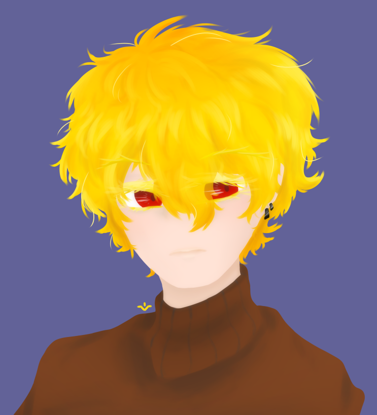
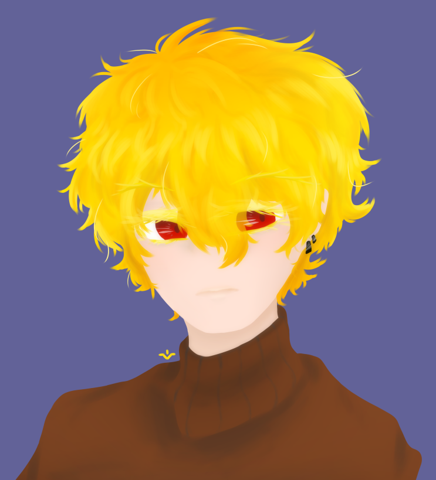

| 허쉬 하스 Hush Haas |
|
|  | |
| 별칭 | 하스, 붉은 일기장의 집필자 |
| 나이 | (외관 상) 26세 |
| 종족 | 나비 |
| Sex / Gender | 남성 / 팬젠더 |
| 직업 | 소설가 |
| 키 | 169cm |
| 몸무게 | 표준 +3kg |
| 혈액형 | A형 |
| 생일 | 11월 12일 |
| 허쉬 하스 Hush Haas |
|
|  | |
| 별칭 | 하스, 붉은 일기장의 집필자 |
| 나이 | (외관 상) 26세 |
| 종족 | 나비 |
| Sex / Gender | 남성 / 팬젠더 |
| 직업 | 소설가 |
| 키 | 169cm |
| 몸무게 | 표준 +3kg |
| 혈액형 | A형 |
| 생일 | 11월 12일 |
선명하게 반짝이는 금발은 악성 곱슬인지 상당히 구불거리며 여기저기로 흩날리듯 튀어나와있다. 가라앉히기 위해 무거운 에센스를 바르기 때문에 약간
광이 난다. 자주 다듬지 않는 것은 물론이고, 짧게 자르는 것을 싫어하기 때문에 언제나 뒷머리는 목의 반을 덮을 정도로 내려와있고, 앞머리는 눈을
찌를 정도로 덥수룩하다. 눈은 항상 반쯤 감은 듯 힘 없게 뜨여져있다. 유난히 크고 어두운 붉은 색의 눈동자는 호밀색의
속눈썹들에 살짝 가려져있다. 속눈썹이 두껍고 긴 편. 아랫 눈가에는 다크써클이 꽤나 짙게 자리하고 있다. 입술 또한 두꺼우며 필링을 넣은 것 마냥
통통하다. 윤기는 흐르지 않고 거친 질감이다. 양 쪽 귀에는 검고 동그란 귀걸이를 착용하고 있다. 얼굴에 전체적으로
살이 많으며 특히나 볼살이 잘 올라있다. 잡티 없는 피부는 햇빛을 자주 보지 않았는지, 투명하며 말랑하다.
외출을 자주 하지 않아서, 입는 옷의 다양성이 적다. 주로 짙은 갈색의 니트와 청바지를 입는다. 신발은 낡은 운동화 한 켤레 뿐.
집 근처로 짧게 외출할 때에는 그것마저 내던져두고 슬리퍼를 신는다. 집 안에서는 아무 티셔츠나 대충 골라잡아 입는다.
잘 움직이지 않고 군것질을 좋아하는 습성을 대변하듯, 살짝 통통한 체형이다. 손목을 살짝 잡아보면 적잖은 살집이 느껴진다.
다크써클과 그루밍되지 않은 머리가 합쳐져, 기운 없고 음침해보이는 인상을 준다.
[ 차분한 ]
겉모습도 그래보이지만, 대체적으로 '조용한', '차분한', '정적인', '수동적인' 이라는 표현들이 어울리는 성격이다.
기본적으로 주변에 쉽게 영향 받지 않으며, 웬만한 소란이 일어나도 자신의 일에만 집중할 수 있을 정도로 무감각하게 행동한다. 타인들을 무시하거나
배척하는 성격은 아니며, 단지 자신만의 템포를 잘 유지하는 것이다.
" 그런 일이 있었구나, 몰랐었네. "
[ 말 수가 적은 ]
담소에 취미는 없는지 친한 친구들과 마주하였을 때 조차도 말을 많이 하지 않는다. 때로는 지나치게 주변에 신경을 주지 않는다.
다만 흥미가 가는 것에 대해 이야기 나누고 있을 때나, 글의 소재가 될 만한 이야기가 튀어나왔을 때에는 기적같이 말 수가 늘어난다.
" 응... 아냐, 아무 일도 없어. 그냥 글 쓰고 있었어. "
[ 다정한 ]
차분하고 템포가 느린 말투 기저에는 상냥함과 다정함이 묻어있다. 누군가 도움을 청할 때에는 마다하지 않으며, 이타심을
모토로써 행동한다. 설령 가치관이 대립하더라도 그가 타인을 비난하거나 업신여기는 일은 찾아보기 힘들 것이다.
" 네가 잘 지내는 것 같아 다행이야. "
[ 영리한 ]
겸허하고 말이 적은 덕에 잘 드러나지는 않지만, 눈치가 빠른 사람이라면 그의 단어 선택과 이야기를 이끌어나가는
방법에서 묘한 총명함을 느낄 수 있다. 중재를 잘 하며, 오지랖이라고 느껴지지 않는 영역 내에서 나긋나긋한 말투로 해결법을 일러주는 일이 잦다.
" 내 말대로 한 번 해보는 것이 어떨까? "
Like / Dislike : 상어, 글쓰기, B급 스릴러 영화 등 / 쥐, 마감일 등
B급 감성의 스릴러 영화를 감상하는 것을 좋아한다. 특히 고어 요소가 가미된 어두운 조명의 옛날 영화들을 즐겨본다. 이는 단순
취향임과 동시에 글을 쓰는 데에 아이디어를 얻는 용도이기도 한다. 유명한 작품들은 DVD판을 구해 책장에 소중히 보관하고 있다.
쥐를 굉장히 싫어한다. 자세히는 무서워한다. 쥐의 검은 눈과 이빨이 소름끼치며, 멀리서 보기만 해도 자신을 물어버릴 것이라는
공포에 시달려한다. 집 구석에서 기어나온 커다란 벌레는 잘 잡지만, 쥐가 나오면 급하게 아는 나비를 부르는 모습을 볼 수 있다.
최근에는 SNS에 푹 빠져 본업을 소홀히 하고있다. 여러 형태의 SNS 모두 관심을 가지며 여러 종류를 전부 하고있다. 일상 계정, 음식 사진을 올리는 계정, 작업 현황을 기록하는 계정, 헛소리 계정 등 여러 계정을 가지고 있다. 처음 만난 사람과 조금만 친해져도 바로 SNS 계정 여부를 묻고 교환하고는 한다. 의외로 SNS 상에서는 말이 매우 많은 편이다.
미스터리, 스릴러 소설을 주로 쓰는 중견급 작가이다. 이쪽 장르에 관심이 많거나 서점에 자주 다닌다면 한두 번 즈음 들어봤을만한 이름. 가명을 사용하지 않는 유명 작가임에도 특이하게 얼굴이나 일상 등 기타 신상이 잘 드러나있지 않다. 그러나 최근에는 책 사인회에 관심을 갖고있다.
대부분의 상대에게 반말을 사용한다. 다만 겉보기에도 나이 차가 많이 나보이거나 고지식한 상대에게는 희귀하게 존댓말을 사용하기도 한다. 목소리는 낮고 울리는 미성. 가끔 자신도 모르게 흘러나오는 허밍이 수준급이다.